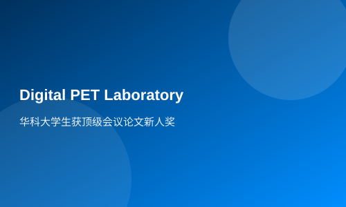

华科大学生获顶级会议论文新人奖
员邹静）华中科技大学生命学院生物医学工程系2012级本科生黎静，日前在2015年美国电气与电子工程师协会核科学与医学影像研讨会IEEENSS\MIC年会上，以第一作者的身份发表论文，获得新人奖...
本讯报（记者邹强明 通讯员邹静）华中科技大学生命学院生物医学工程系2012级本科生黎静，日前在2015年美国电气与电子工程师协会核科学与医学影像研讨会IEEENSS\MIC年会上，以第一作者的身份发表论文，获得新人奖。据悉，黎静因此成为亚太地区首位获得该会议新人奖的在读本科生。
该论文主要从探测极限和定量准确性两个方面分析了利用小动物PET来进行体外细胞实验的可行性。她创新性地将小动物PET应用到了体外细胞实验中，为体外细胞实验提供了一种少操作、高通量的实验方法。该论文采用了仿真实验和实际实验相互印证的实验方法，使得高通量的体外实验成为可能。
相关链接